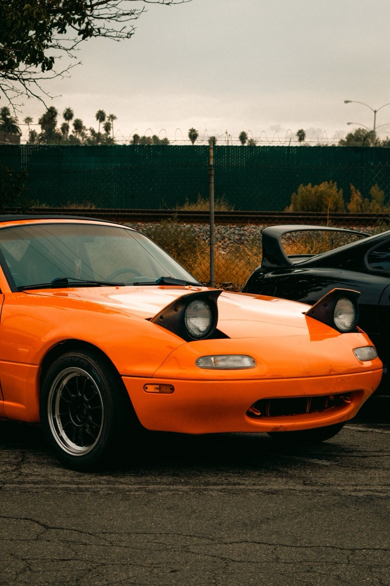
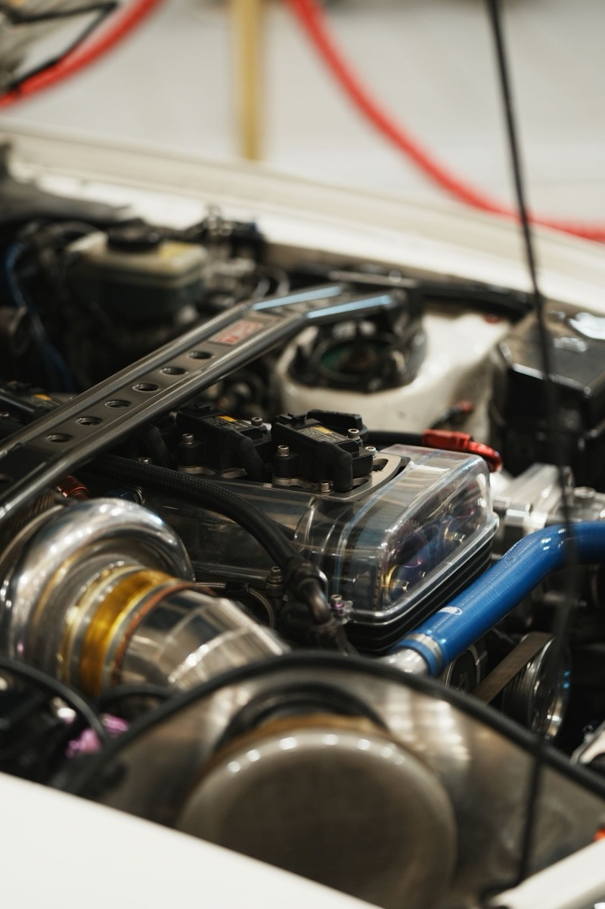
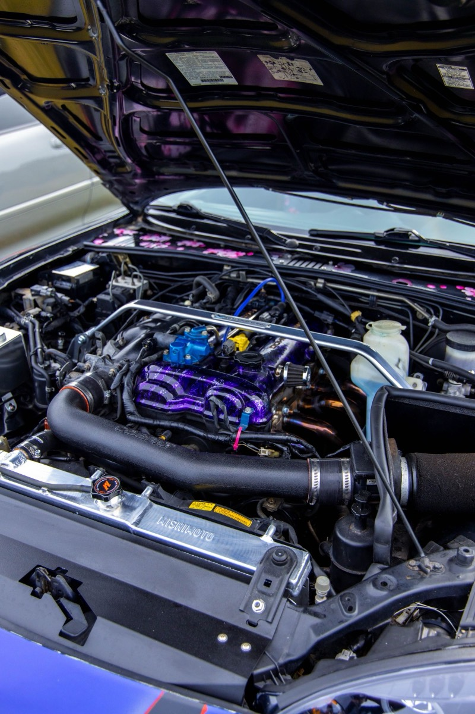
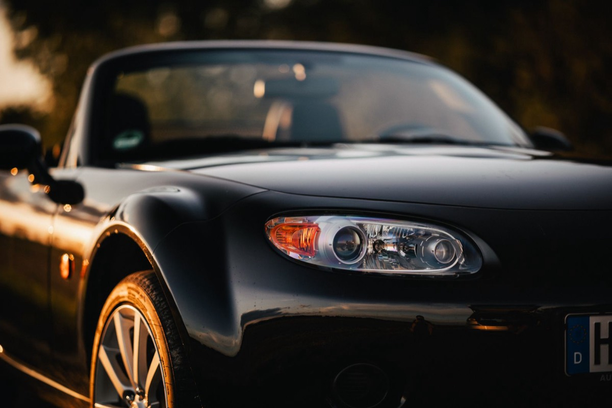
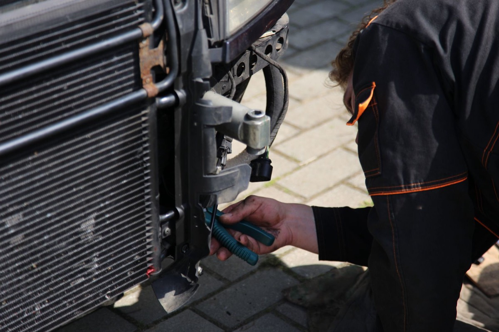
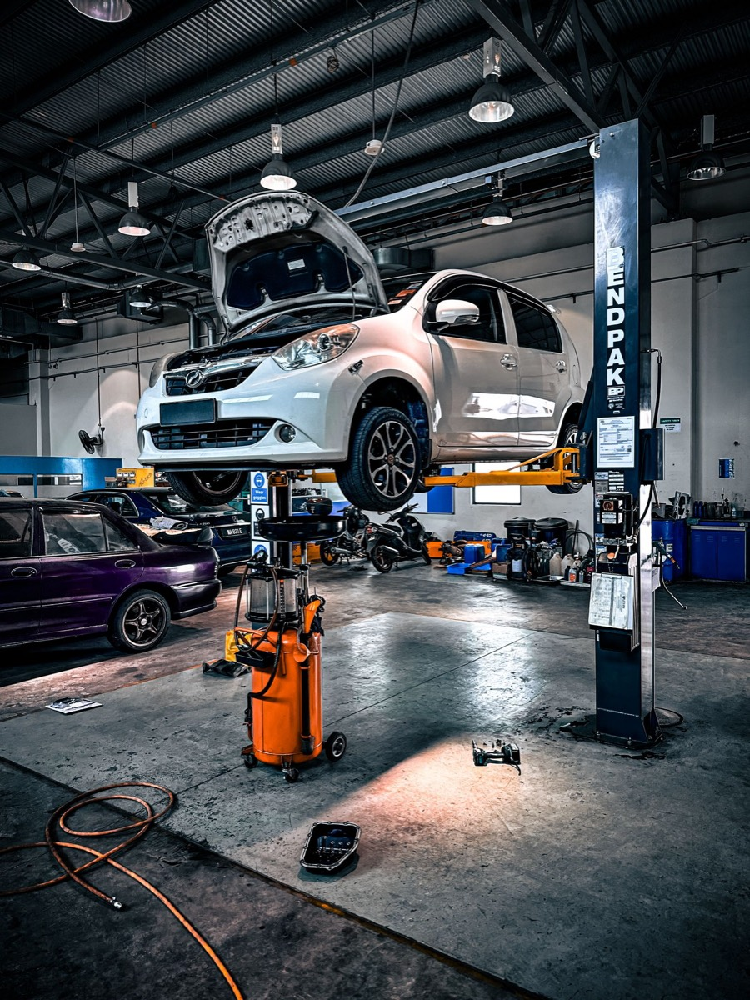

Boosted Miata Build Order: The Parts That Decide Whether It Survives
Every turbo Miata video is about the turbo. The parts that decide whether the car is still running in two years are the four that never appear in the thumbnail — the ECU, the fuel pump, the clutch and the radiator. This is the order those four go in, priced from live listings read on 18 November 202
The catalog splits cleanly down the middle: every standalone ECU listed fits a 1990–2005 NA or NB, and both forced-induction kits fit a 2016+ ND. There is no year where you can buy both halves of the build from the same shelf.
The most-reviewed part in the entire Miata catalog is not a turbo, an ECU or a clutch. It is the $299.95 Mishimoto radiator, with 86 reviews — against 0 to 2 for every ECU and every forced-induction kit on the same site.

Every turbo Miata video is about the turbo. The parts that decide whether the car is still running in two years are the four that never appear in the thumbnail — the ECU, the fuel pump, the clutch and the radiator. This is the order those four go in, priced from live listings read on 18 November 2026.
There is one thing worth stating before any of it, because it changes how you shop. The retailer these prices come from splits the Miata catalog cleanly and inconveniently in half. Every standalone ECU on it fits a 1990–2005 NA or NB. Both forced-induction kits on it fit a 2016+ ND. There is no single model year where you can buy the computer and the boost from the same place.
What the catalog actually contains
That split is not a glitch in the search. The MegaSquirt plug-and-play units are listed in five year bands covering 1990 through 2005, and the Haltech adaptor harness kits in two. The two supercharger kits are listed for the ND only.
So a boosted Miata project on this platform is two purchases from two kinds of seller. The computer, the fuel system, the clutch and the cooling come from a parts catalog. The turbocharger, the manifold and the downpipe come from a Miata specialist who builds them for that car. Neither half is optional and neither half is the fun one to film.
The rest of this guide prices the half that is in the catalog.

The ECU decision, and the $1,260 harness trap
The ECU is first because it is the only part on the list that the rest of the build depends on. A stock Miata computer will not run boost, and it will not run an ethanol blend at all.
| ECU | Fitment | Price | Reviews |
|---|---|---|---|
| MegaSquirt Gen2 PnP | 1999–2000 NB | $829.99 | 1 |
| MegaSquirt Gen2 PnP | 1994–1995 NA | $899.99 | 1 |
| MegaSquirt MS3Pro PnP | 1990–1993 NA | $1,299.99 | 0 |
| MegaSquirt MS3Pro PnP | 1996–1997 NA | $1,299.99 | 0 |
| MegaSquirt MS3Pro PnP | 1999–2000 NB | $1,299.99 | 1 |
| MegaSquirt MS3Pro PnP | 2001–2005 NB | $1,299.99 | 1 |
| Haltech Elite 750 + harness kit | 1990–1997 NA | $1,655.00 | 0 |
| Haltech Elite 750 + harness kit | 1998–2005 NB | $1,655.00 | 0 |
| Haltech Elite 1500 + harness kit | 1998–2005 NB | $2,059.00 | 0 |
The $400 gap between the Gen2 and the MS3Pro is the real decision. The Gen2 is the older board and it is listed for 1990 through 2000 only, where the MS3Pro covers the whole 1990–2005 run. If your car is a 2001–2005 NB, the cheaper option does not exist for you.
MegaSquirt MS3Pro PnP, 1999–2000 NB → $1,299.99 · 1 review · checked 18 Nov 2026
MegaSquirt Gen2 PnP, 1994–1995 NA → $899.99 · 1 review · checked 18 Nov 2026
The Haltech trap is the single most expensive naming problem on this page. Two listings sit next to each other, both titled “Haltech Elite 750 Mazda Miata NB Plug’n’Play Adaptor Harness,” and they are $1,260.00 apart:
- $395.00 — the adaptor harness on its own. No computer in the box.
- $1,655.00 — the same harness supplied with the Elite 750 ECU.
The word “kit” is the only thing separating them in the title. A buyer who reads “harness” and stops there spends $395 on a wiring loom and still has no engine computer. The same shape applies to the Elite 1500, $404.00 more than the 750 kit for the higher-spec board.
Haltech Elite 750 harness kit, 1998–2005 NB → $1,655.00 · 0 reviews · checked 18 Nov 2026
Whatever you pick, you need a wideband to tune it. The Innovate MTX-L+ is $229.99 with 7 reviews and the bare LC-2 controller is $198.99 with 1, so the gauge version costs $31 more than the box that does the same job with no display. On a first boosted build you will watch that number more than the tachometer.

Fuel comes before boost
A 340-litre-per-hour pump is not a performance part. It is the part that stops the engine from going lean at the top of a pull, which is the failure that holes a piston. Buy it before the turbo, not after.
| Pump | Fitment | Price |
|---|---|---|
| Walbro kit | 1999–2005 NB | $38.99 |
| Deatschwerks DW200, 255 lph | 1994–1997 NA | $109.00 |
| ISR 340 lph, E85 compatible | 1989–2005 NA/NB | $146.30 |
| DeatschWerks DW340, 340 lph | 1994–2005 NA/NB | $169.00 |
The $38.99 Walbro is the outlier and it is a real listing, marked down from $86.07. It is a fuel pump kit rather than a pump upgrade — no flow figure is published in the listing, which is exactly why it is $38.99.
The ISR at $146.30 is the value pick: it covers the entire 1989–2005 run in one part number, it is rated 340 lph, and it is listed as E85 compatible. The DW340 costs $22.70 more for the same flow and the same coverage.
ISR 340 lph E85 pump kit, 1989–2005 → $146.30 · 0 reviews · checked 18 Nov 2026
Add the $47.45 Radium fuel rail plumbing kit if you are going to a larger rail. It adapts a Radium rail to the factory feed and return on both the 1994–1997 and 1998–2005 cars.

The clutch is a wear item you are about to double
A factory clutch is sized for a factory engine. Forced induction takes the torque past what it was specified to hold, and it will slip in the gear you care about — which reads as a boost problem and is actually a friction problem.
| Clutch | Fitment | Price |
|---|---|---|
| XClutch Stage 2 ceramic, single sprung | 1990–1993 NA | $389.22 |
| Action Clutch Stage 2 (1SC) | 2004–2005 Mazdaspeed | $488.71 |
| Competition Clutch Stage 2 | 1994–2005 NA/NB | $525.00 |
| Clutch Masters FX400, 6-puck | 1994–2004 NA/NB | $552.50 |
XClutch Stage 2 ceramic, 1990–1993 → $389.22 · 0 reviews · checked 18 Nov 2026
The XClutch is the cheapest at $389.22 but it is listed for the 1.6-litre 1990–1993 cars only. For a 1.8 NB the entry point is the Competition Clutch at $525.00, which covers 1994 through 2005 in a single kit.
A sprung hub matters more on this car than the friction material. The Miata’s driveline is light and a rigid 6-puck disc — the FX400 at $552.50 — transmits every take-up into the gearbox and the differential. On a street car the sprung ceramic is the one you can live with.
While the gearbox is out, the flywheel is free labour. The ACT XACT Streetlite is $406.00 and covers 1990–2005, one part number for every NA and NB.

Cooling is the part with 86 reviews
This is the number that tells you the most about the whole catalog. Of every ECU, clutch, pump and forced-induction kit on this page, review counts run from 0 to 2. The radiators run to 86.
| Radiator | Fitment | Price | Reviews |
|---|---|---|---|
| Mishimoto aluminium | 1990–1997 NA | $299.95 | 86 |
| Mishimoto aluminium | 1999–2005 NB manual | $299.95 | 86 |
| Koyorad aluminium | all MX-5 chassis | $339.99 | 2 |
| CSF aluminium racing | 1998–2005 NB | $399.00 | 2 |
Mishimoto aluminium radiator, 1990–1997 → $299.95 · 86 reviews · checked 18 Nov 2026
Eighty-six reviews against two is not a marketing difference — it is that the Mishimoto is the part people actually buy, and it is the cheapest of the four. The Koyorad asks $40 more and the CSF $99 more, on a tenth of the review volume between them.
The $68.95 Mishimoto racing thermostat is the companion piece, and it is worth pairing with the radiator rather than fitting separately — it opens at a lower temperature and it is cheap insurance against the heat soak that kills a boosted engine in traffic.

The boost itself, priced
Both forced-induction kits in this catalog are for the ND, and both are superchargers rather than turbos — a belt-driven compressor rather than an exhaust-driven one. On a 2.0-litre ND that means boost that arrives with throttle position instead of with revs.
| Kit | Fitment | Price | Reviews |
|---|---|---|---|
| HKS GT2 Supercharger Pro Kit | 2016–2025 ND 2.0L | $5,310.00 | 0 |
| Edelbrock E-Force Stage 1 | 2016–2018 ND 2.0L | $6,595.95 | 0 |
The HKS is $1,285.95 cheaper and covers a wider year range — through 2025 against the Edelbrock’s 2016–2018. Neither listing carries a review, so neither has an owner track record on this site to judge them by, and this guide will not pretend otherwise.
For the NA and NB cars, where the standalones live, the turbocharger comes from a Miata specialist rather than from this catalog. That is the one purchase in the build you cannot price from a listing page, and the one you should price last — after the ECU, the pump, the clutch and the radiator, because those four set the boost ceiling you can safely run.
The order to buy things
1. The ECU. Everything else is chosen to match it. The Gen2 at $829.99 if your car is 1994–2000, the MS3Pro at $1,299.99 if it is 2001–2005.
2. The wideband. $229.99 for the MTX-L+ with a display. You cannot tune without a number to look at.
3. The fuel pump. $146.30 for the ISR 340 lph. Before the boost, not after.
4. The clutch. $525.00 for the Competition Stage 2 on a 1.8, and $406.00 for the flywheel while the gearbox is already out.
5. The radiator and thermostat. $299.95 and $68.95. The most-reviewed part in the catalog, and the cheapest of the four options.
6. The boost. Last, priced from a specialist, sized to whatever the first five will support.
That is $1,871.24 in parts before the turbocharger — ECU, pump, clutch and radiator, at $899.99 + $146.30 + $525.00 + $299.95 on a 1994–1995 car. Every one of those four fits the same model year, which is not true of every combination on this page. Set that against the $5,310.00 HKS kit for an ND and it is clear the supporting parts are the cheap half of a boosted build. They are also the half that determines whether the expensive half survives.
Is any of this legal in California?
Every part in this guide was checked for a CARB Executive Order number on 18 November 2026. None of them carries one. The searches returned no EO number on any ECU, any fuel pump, any clutch, any radiator or either supercharger kit — the only matches for the letters “CARB” across these listings were the words “Carbon Fiber” and “carbureted” inside unrelated product copy.
Without an EO number, a standalone ECU and a forced-induction kit are not legal for street use in California, and they fail smog visual inspection even when the car reads clean at the tailpipe. A replacement radiator, a clutch and a fuel pump of the same specification are service parts and are a different question; the ECU and the boost are the two that change the emissions equipment. Ask the seller for an EO number in writing before you buy either, and if there is not one, the car is not a California street car any more.
Topics
- Tuning